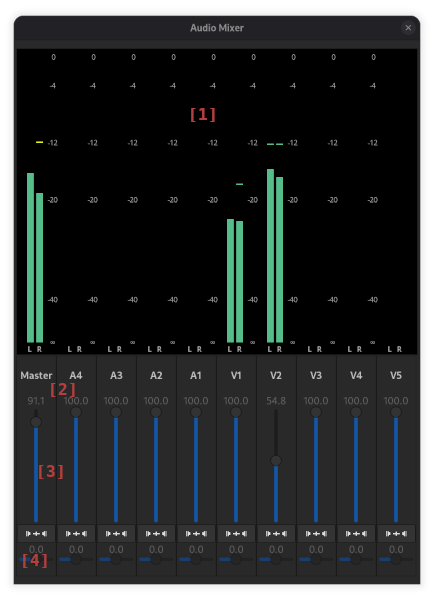

Audio Mixer
Audio Mixer Window

[1] Audio Level meters area
- Master Out level is on the left, levels for each track are from left to right.
- Left and Right channels for each track and master output have separate levels bars.
- Peak values remain visible for short while as small horizontal lines.
- When peak voluma hits 0db a red diamond shape is shown as a clipping indicator above the channel that was clipped.
[2] Labels and control amount info. Master and each track are labeled and the current amount of applied level control is displayed here.
[3] Level control. Slider control for output volume level
[4] Balance controls. A toggle button to activate Left/Right balance control, a numerical display for the applied balance and a slider for changing the balance.